開発ガイド
入門編
BluesNovelとは
WebGL・JavaScriptを中心としたWeb技術によるノベルゲームシステムです。作者の旧エンジン SKYNovel を React／TypeScript で書き直したものです。
- 参考記事：一般公開開始時の概要記事（SKYNovel）
- どんな事が出来るの？ What can SKYNovel do? sample
ブラウザから直接動かせるサンプルギャラリーです（ソースファイル）
BluesNovelのはじめかた
すべてGUIによるインストールです。
- Visual Studio Code（以後VSCode）をインストール
- VSCode用拡張機能 SKYNovel をインストール
- あとは 拡張機能 SKYNovel の指示に従って……
VSCodeをインストール
VSCodeは多機能なテキストエディタで、BluesNovel開発環境のベースとなります。フリーウェアです。
ダウンロードしてインストールしていきます。
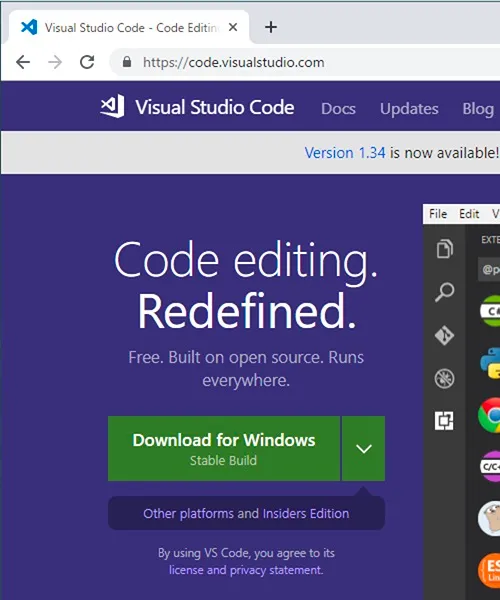
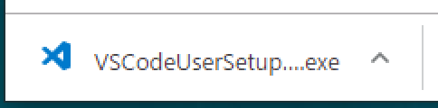
Macの場合も同様です。
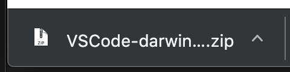
Macの場合はzipを解凍するとappファイルが入っていますので、それを「アプリケーション」フォルダに移動するだけです。
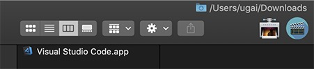
あとはアプリケーションとして起動できます。
以後は Windowsの場合について解説していきます。
exeを開くとインストーラーが起動します。
あとはよくあるソフトのインストールですが、注意点だけ赤丸しておきます。
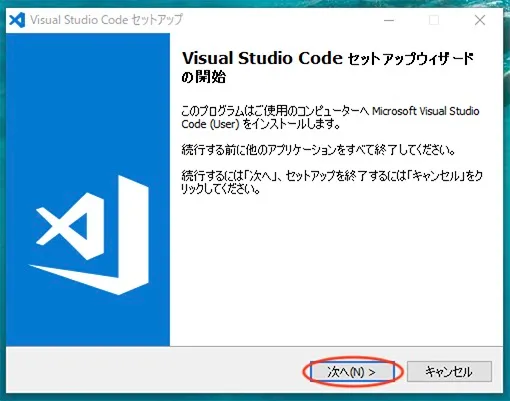
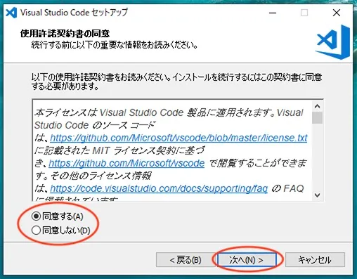
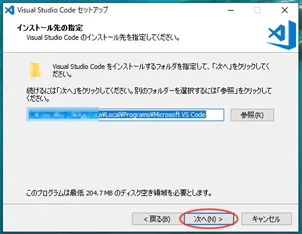
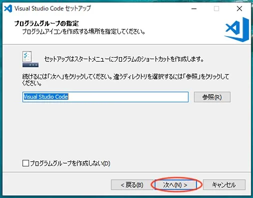
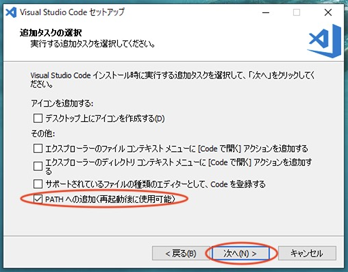
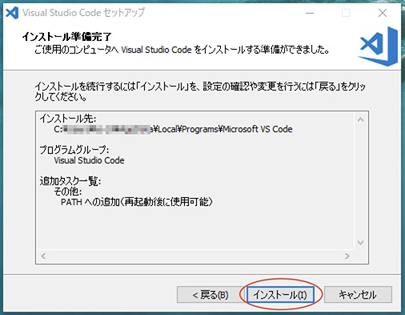
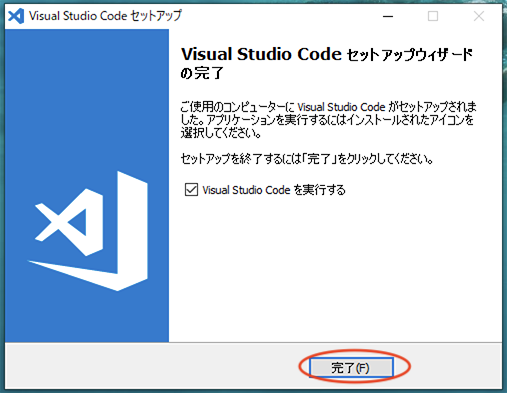
インストールを完了し、起動できました。
右下に【日本語言語パック】のインストールをうながす通知があるので、クリックして下さい。メニューなどGUIが日本語化されます。
VSCodeの最低限の設定は以上です。
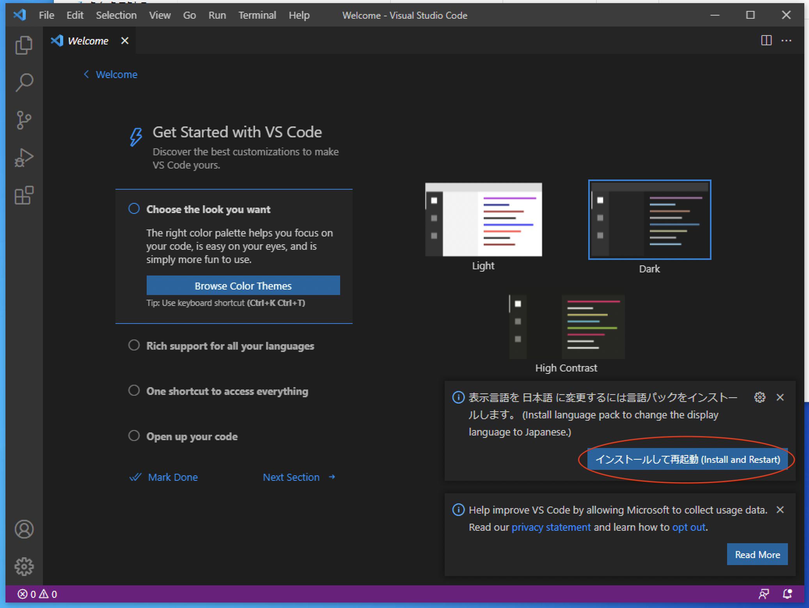
VSCode用拡張機能 SKYNovel をインストール
起動したVSCodeからインストールできます。
左端の「Activity Bar」上から５つ目をクリックし、
検索窓に「skynovel」（大文字小文字関係なく）入力すると、
SKYNovel と書いてあるのが（恐らく）一つだけ検索に引っかかるので「インストール」を押して下さい。それだけです。
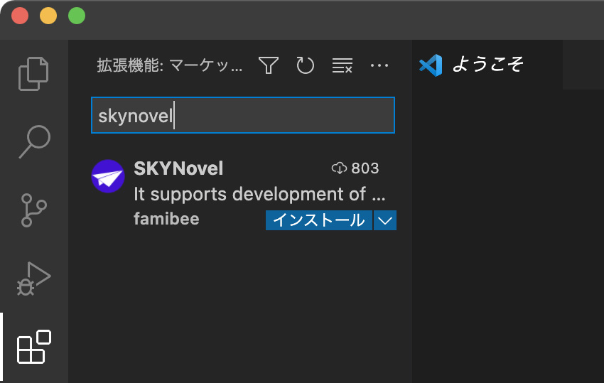
以降の説明では Material Icon Theme - Visual Studio Marketplace という拡張機能もインストールし、アイコンもカラフルにしています。
あとは 拡張機能 SKYNovel の指示に従って……
Node.jsなどをインストールしていきます。
左端の「Activity Bar」に拡張機能 SKYNovelの「丸に紙飛行機」ロゴマークが表示されているので、クリックして下さい。
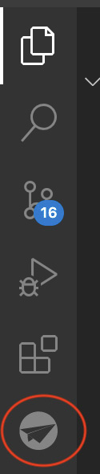
一番上に開発環境の状況が表示されています。エラーっぽい表示がされていますね。
環境設定がまだすこし残っているわけです。
同時に「SKYNovel開発環境 準備の手引き」というページが開かれていますか？
開かれていない場合は、【Node.js】の行にマウスカーソルを乗せたときに表示される【矢印ボタン】を押してください。
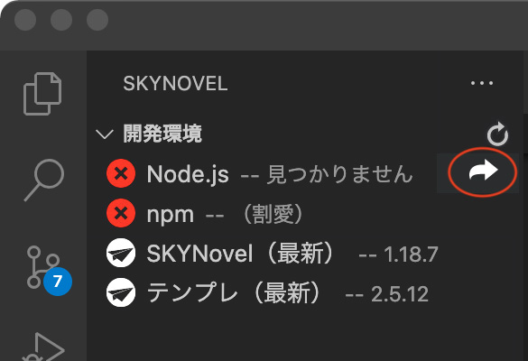
図は「SKYNovel開発環境 準備の手引き」というページです。
あとはその指示に従ってインストールを続けて下さい。
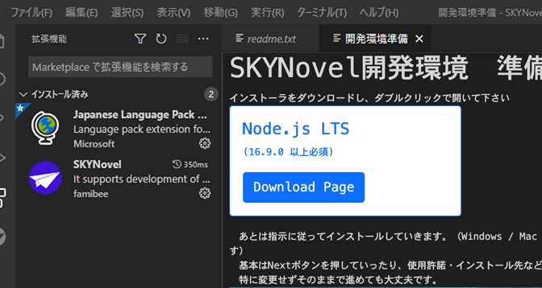
すると……
エラーが消えました！
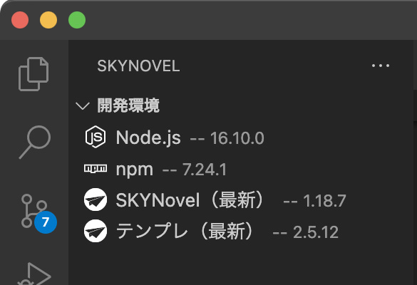
環境設定はここまでです。
テンプレートで始めよう
すでに動くゲームをオープンソースで提供しており、これを改造していきます。
例えば自作の小説本を出版するとします。
その際、パルプの生成方法、紙の刷り方、印刷技術、装丁デザインの勉強等までする必要があるでしょうか？
本来小説を書くというのは、紙とペンを用意し、書き始めることだけのはずです。
良い小説を書くために「小説の書き方本」を読みあさり、知らない事を勉強する方向へ労力を注ぎ、胃を壊すぐらいコーヒーを飲みたいのではないでしょうか？
同じように、まずはあなたの作品を造り上げることに専念して下さい。
●ではどうやって本にするのか？
今ここに本があります。
梶井基次郎 原作の短編ノベルゲーム「桜の樹の下には」または拙作「初音館にて」です。
実はこれは鉛筆で書かれています。
まずはこの本を消しゴム掛けして、元の文章をあなたの原作に書き換えてしまいましょう。
本を作るところから、始める必要はありません。
これはもちろんたとえ話ですが──同じようにして、あなたの本が完成するのです。
作品を書いているうちに装丁を考えたり、紙質や手触りに凝ったりしたくなるかも知れません。
その時は初級・中級・上級へと読み進めていって下さい。
今度は小説を書く楽しみではなく、本を作る楽しみが待っています。
どんなものか、お試しでやってみましょう。
【ワークスペース】ビューにある「テンプレートから始める」ボタンを押します。
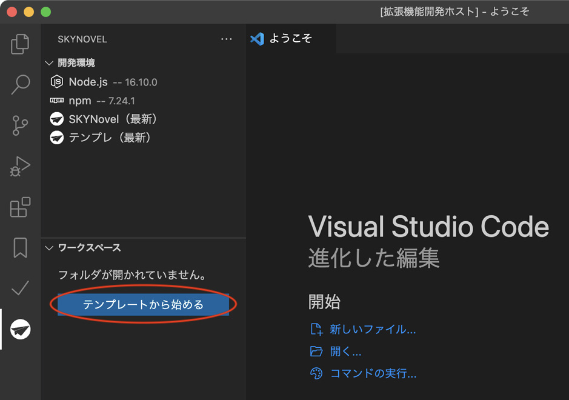
【テンプレートから始める】画面が表示されます。
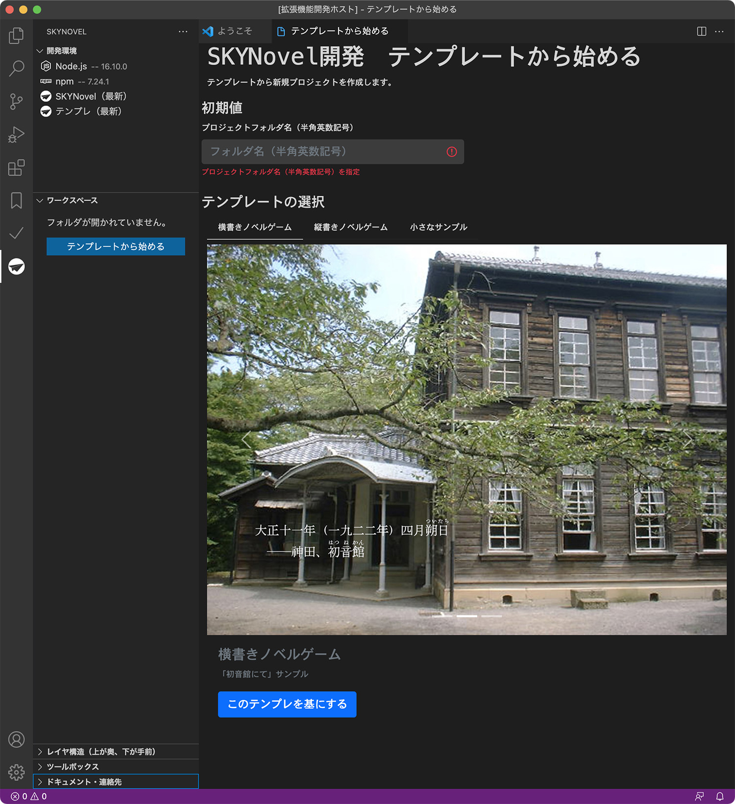
上部に【プロジェクトフォルダ名】を入力します。半角英数記号を推奨しており、それ以外はエラーになります。
この例では、【yokogaki】としておきます。
- 横書きノベルゲーム
- 縦書きノベルゲーム
- 小さなサンプル
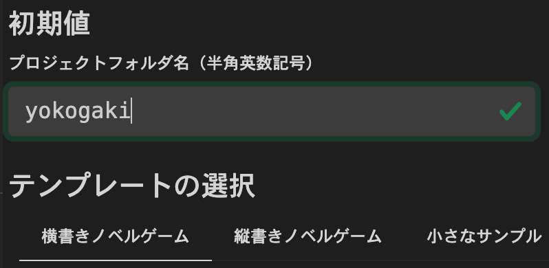
決めたら、【このテンプレを基にする】をクリック。
フォルダ選択ダイアログが表示されるので、プロジェクトフォルダを置く場所を指定して下さい。
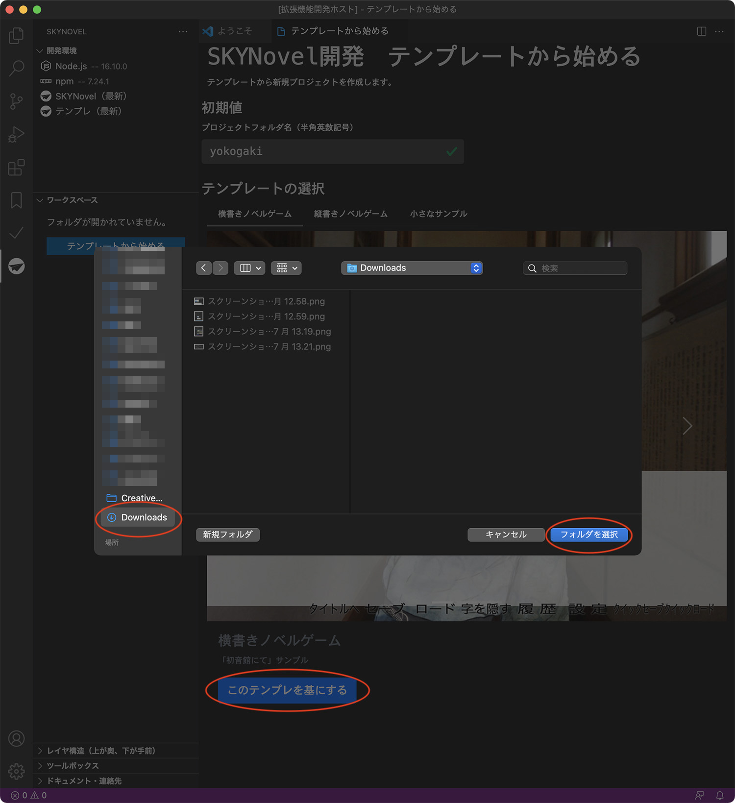
右下に進捗が表示されます。ネット回線が速いなら一分以内に完了し、フォルダを開きます。
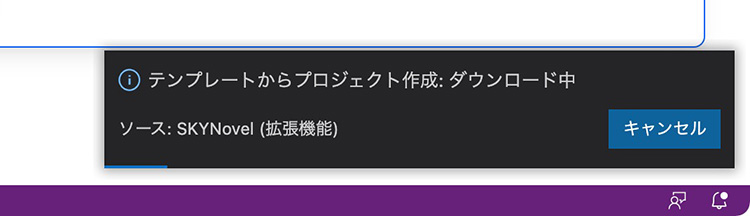
新プロジェクトが開かれました。
※一部の特殊なフォルダでは図のようなセキュリティダイアログが表示されるので、【はい】をクリックします。
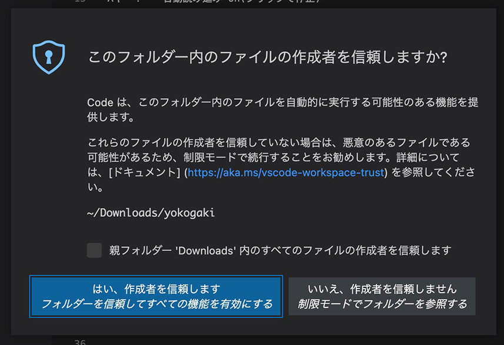
また、フォルダを開いた際、初回のみ初期化処理が走ります。しばしお待ち下さい。
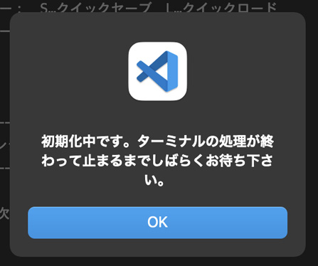
このようなセキュリティダイアログも同様に【続行】をクリック。
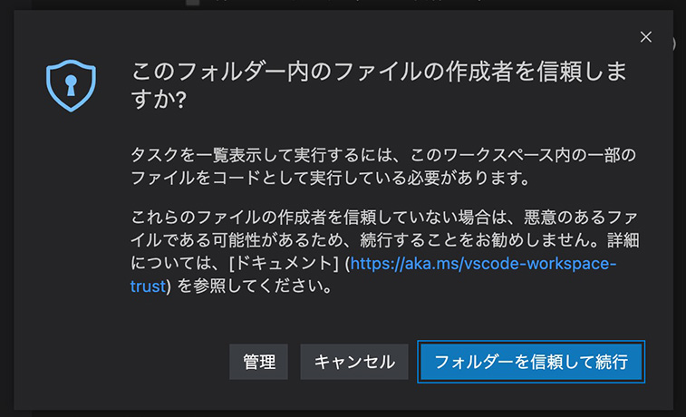
下方の【ターミナル】も停止し、準備完了です。
readme.txtが開かれ、サイドバーにはエクスプローラーやFinderのようなファイル一覧が表示されています。大文字表示ですが【yokogaki】フォルダ内です。
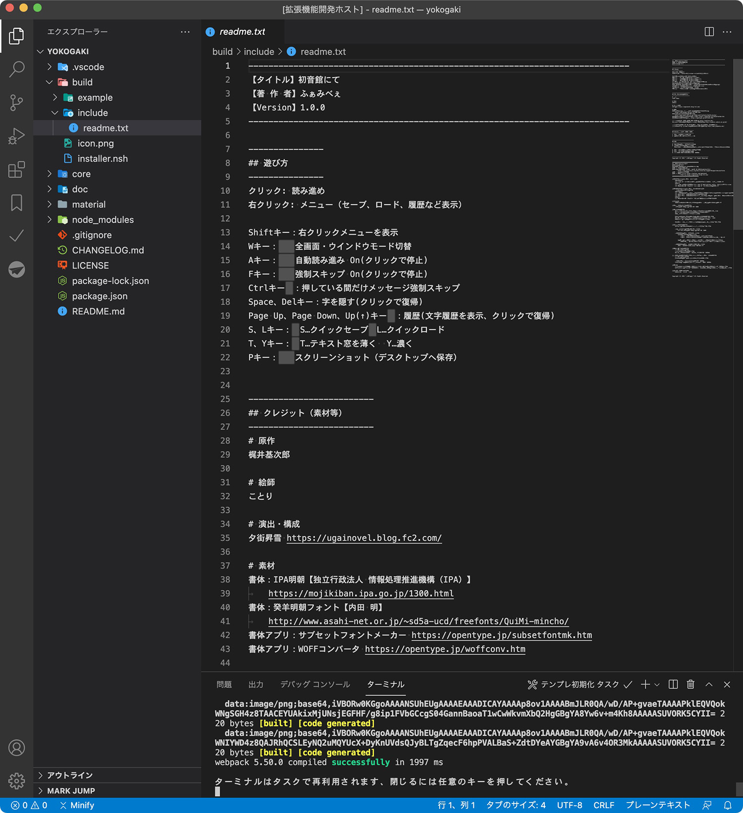
SKYNovelロゴをクリックすると、ワークスペースに現在開かれているプロジェクト（フォルダ）一覧が表示されます。ここでは【yokogaki】です。
またプロジェクトごとにライブラリを更新したり、ブラウザ版を起動したり、ワンタッチで様々な操作ができるようになっています。詳細はまた別項にて解説します。
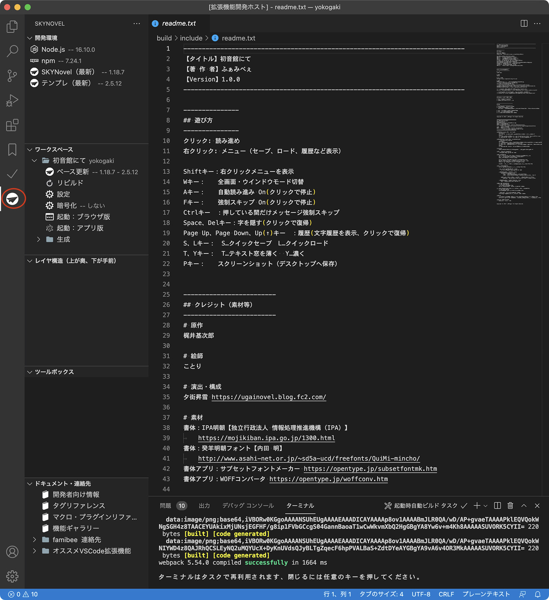
試しに【設定】をクリックしてみると、プロジェクトの様々な設定が入力できる画面が表示されます。
プロジェクト名が【yokogaki】です。
※変更すると、フォルダ名はそのままにプロジェクト名のみが変更されます。パッケージのファイル名などがプロジェクト名を基にしています。
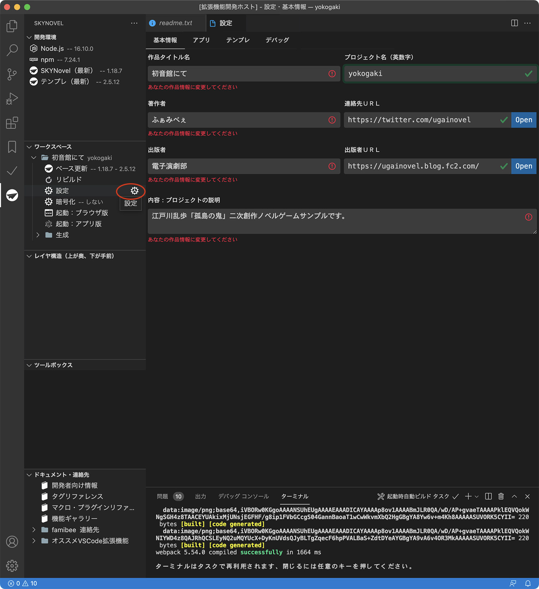
今度は【起動：ブラウザ版】右にマウスカーソルを乗せると現われる、【再生ボタン】をクリックしてみましょう。
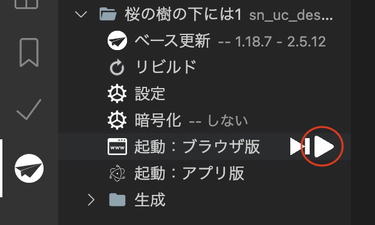
ブラウザが起動し、テンプレを基にしたブラウザ版ゲームが起動します。
画像や音楽の素材を差し替えたり、スクリプトを書き換えたり。
これを改造して、自分のゲームへと作り込んでいくわけです。
改造してみよう
テンプレートを改造してみましょう。まずはタイトル画面から。
自由な文字列からボタンを作れる「文字ボタン」という機能があります。
テンプレートのタイトル画面でも使用されていますので、これを変更してみましょう。
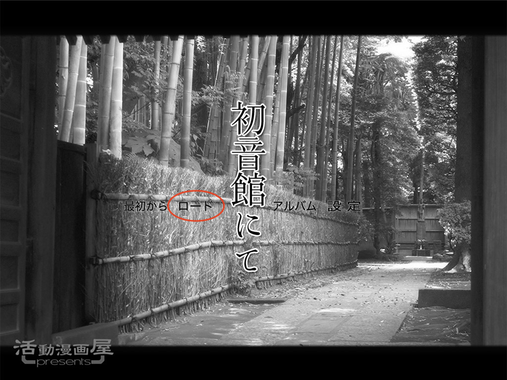
「Activity Bar」一番上の「エクスプローラー」を選択します。
【prj/script フォルダ】下の【main.sn】をクリックすると、そのファイルが開かれます。
この拡張子【.sn】のファイルはスクリプトというテキストファイルで、シナリオや様々な演出はこのファイルを変更・記述していきます。
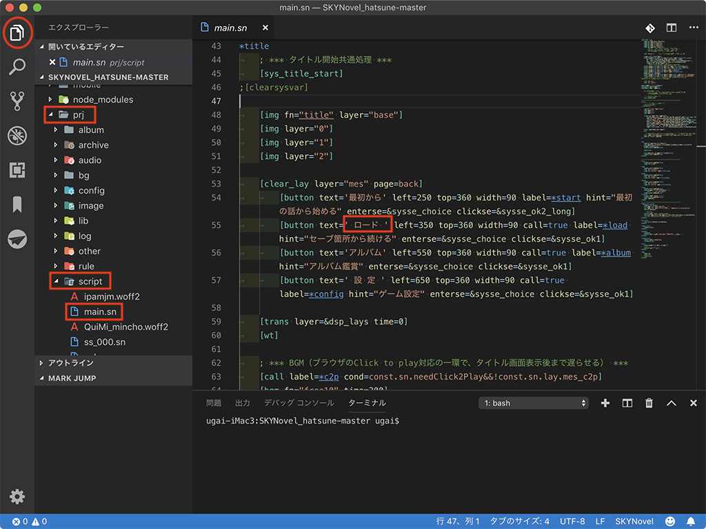
「わけの分からないことが書いてある！ 意味不明！」
ですが、いまは置いといてください。おいおい解説しますので。
（余談）（慣れればお好きなテキストエディタで変更して構いません）
※文字コードはUTF-8、改行コードは LF 固定です。文字コード・改行コードを間違うミスに注意。
ここで55行目付近にある「ロード」という文字を「つづきから」に変えてみます。
メニューの【ファイル】-【保存】、あるいは Ctrl+Sショートカットで保存します。
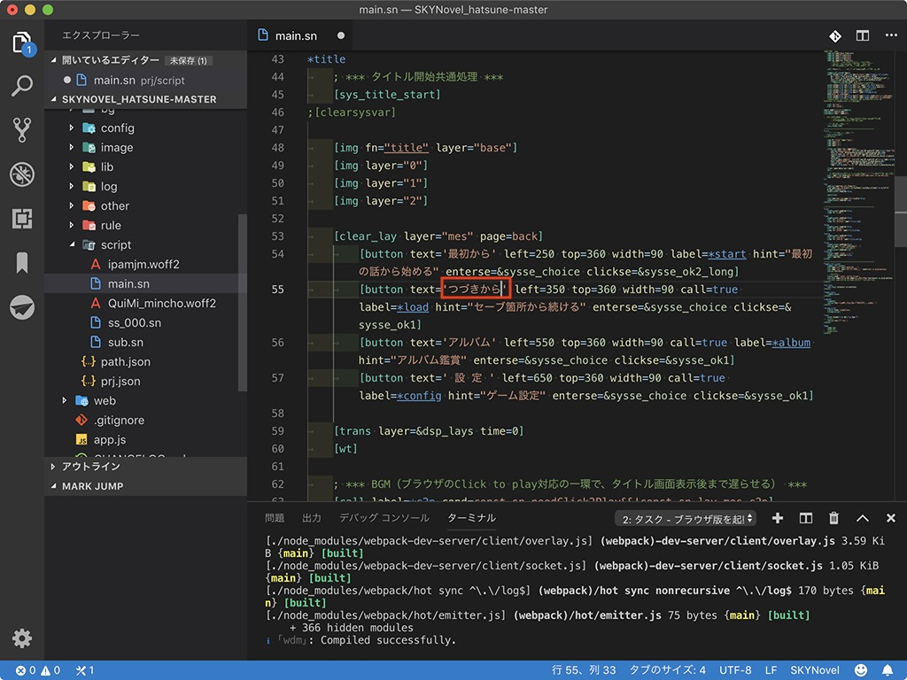
自動で再読み込みされます。
（自動でされなければ、ブラウザの再読み込みボタンを押します）
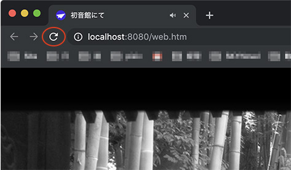
文字が変更されました！ ボタンもちゃんと押せます。
さて、いまわざと触れませんでしたが、いま変更したのは「[button]タグのtext属性」というものです。
「タグ？？？ 属性？？？」
新しい言葉が出てきましたね。タグについて解説していきます。
（豆知識）VSCodeで自動保存
スクリプトを変更するたびに保存を選んだり、毎回ショートカットを押すのは面倒！
そこで、VSCode に保存を任せてしまいましょう。
こちらの記事を参考に、VSCode を便利に設定してみて下さい。
→[VS Code] 自動保存するように設定する | あいすのブログ （web.archive.org）
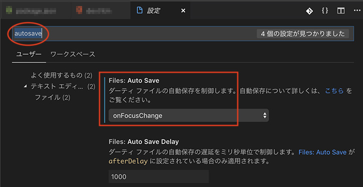
（注意）設定画面の「ダーティーファイル」というのは、「変更したけど保存してないファイル」という意味合いです。自分も「onFocusChange」にしてます。別のアプリをクリックしただけで保存してくれます。この辺はお好みで。
スクリプトの変更を戻したい場合は、メニューの【編集】-【元に戻す】にて。「アンドゥ（UNDO）」というやつです。
VSCode には他にも様々な便利設定があります。どんどん使いやすくしていきましょう！
スクリプトとは
スクリプトってなんでしょう？
BluesNovelにおけるスクリプトとは、
テキストファイルに書いた「小説」に、タグなどによる「演出」を書き加えたものです。
実際に見てみましょう。【main.sn】と同じフォルダにある、【ss_000.sn】を開いて下さい。
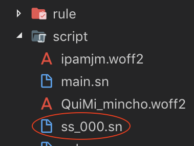
「小説」は【君の部屋に行こう】という文字の部分です。
「タグなどの命令」は「[」と「]」の半角文字の大括弧に挟まれた、英語や数字や記号の部分です。
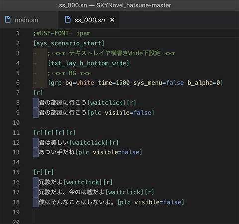
（余談）「;」で始まる部分はコメントや注釈と呼ばれるもので、制作者がメモを書ける機能です。BluesNovel 自体は読み飛ばしますので、スルーして下さい。
７行目は「[r]」ですね。これを今後は「タグ名が r だ」と言い、「rタグ」と呼び、今後この文章（BluesNovel 開発者向け情報）では[r]と書きます。
【bg=white】とか【visible=false】とか、たくさん「おまけ」が付いてる[grp]や18行目の[plc]に注目です。
「おまけ」は、「属性」と呼びます。
一つの働きをするタグに、細かい指示をする記述の事です。
半角空白や改行で途切れて、複数指定できます。（タグがサポートしてない属性は無視されます）
属性って色んなものにありますよね。
呪文にも「タイプは炎系。力の源は闇。攻撃力は２５。水棲生物に強い」
女性キャラクターなら「年齢は十四歳。メガネは必須！ 髪色は黒髪、背はちょっと高めなのを気にしている。スリーサイズはそれぞれ……」
某ラーメン屋なら「アブラナシヤサイカラメマシニンニクスクナメ」
同様に[sys_scenario_start]、最後に[grp]などなど。
それぞれが小さな機能を持っています。それらを積み木のように組み合わせて、演出をしていきます。
試しに [r] について知りましょう。
タグの機能については「タグリファレンス」というWeb上の資料で確認できます。
このページの左上の【タグ】からでもいいですが、リンクを張っておきます。
→BluesNovel タグリファレンス Tag Reference [r]
「文字レイヤ」とか「ページ」とか色々不明の言葉がありますが──
とにかく、【改行を出力する】機能を持っています。
タグは言うなれば魔法の呪文。
RPGなら暗い洞窟を明るく照らしたり、仲間の体力を回復したり、扉の鍵を開けたり。
呪文は一つ一つに意味があり、役割があります。便利で頼りになる道具です。
でも瀕死の仲間を明るく照らしたり、扉の体力（？）を回復したりしても意味はありません。
タグの使い道を正しく理解し、よりよいノベルゲーム制作という冒険を進めましょう。
「タグなどの命令」は一見ややこしく難しそうに見えます。
ですが、「今すぐ」「全てを」理解する必要はありません。
タグリファレンスというカンニングペーパー、辞書があります。
タグを使いこなすのに、「あんなタグがあったな」となんとなく憶えておけば、あとはタグリファレンスという辞書を引きながら記述していけばよいのです。
例えばさっき「ロード」という文字を「つづきから」に変えたのは、[button] タグの text属性 を変更したのだった、というわけです。
（豆知識）引用符っているの？ いらないの？
属性の値の引用符について。
引用符、すなわち。
属性の値でアポストロフィー【'】やクオーテーションマーク【"】で囲っていたりいなかったり、表記が揺れているのが分かるでしょうか？
先ほど変更した[button]ですら、三種類が混在しています。
[button text='つづきから' left=350 top=360 width=90 call=true label=*load hint="セーブ箇所から続ける" enterse=&sysse_choice clickse=&sysse_ok1]
これはどの書き方でも同じ動作をします。ので、制作上はどれでも構いません。
（見た目があまり美しくないので、揃えたほうが良さげですが……）
ただ、「引用符に囲まないと半角空白が表現できない」などの理由で、この文法が用意されています。
変更前に text=' ロード ' という記述だったのもそれです。
（引用符を使わないと、属性の区切りと見なされエラーになってしまいます）
引用符を文字として値にしたい場合もあります。
その場合は text='太郎"うひょー"' という感じで指定できます。
両方の引用符を使いたいときは……？
実は【#】（半角いげたマーク）も引用符に使えるようになっています。
text=#太郎"うひょー" 花子'むきょー'#
では三種類の引用符を同時に文字としたいときは……？
本家 SKYNovel v1.18.8 で導入されたエスケープシーケンスに対応しています。
"\"'#"
'"\'#'
#"'\##
というように、「\」を前に付けて下さい。
ＢＧＭ素材を差し替えよう
素材を差し替えて、よりあなたの作品らしく
audio フォルダに様々な mp3 ファイルが入っています。
これらは効果音やＢＧＭ（バックグラウンドミュージック）のファイルです。
タイトル画面でもＢＧＭが流れていますが、これを変更してみましょう。
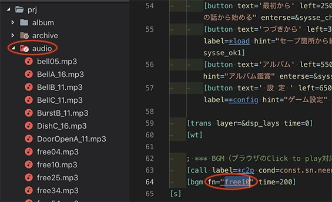
再び【main.sn】を開いて、64行目辺りにある[bgm]に注目して下さい。
fn="free10" となっているので、値をfree04に変更してみましょう。
拡張子は省略できる、というのもポイントです。
ページを再読み込みすると、なんだか明るい雰囲気のタイトル画面になりました。
画像素材なども同じように変更・差し替えていくことができます。
初級テクニック
BluesNovelを更新しよう
BluesNovelは随時更新されています。更新の通知と手段を知りましょう
VSCode起動時、時々右下にポップアップが現われることがあります。
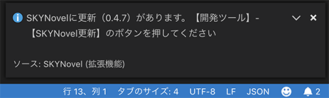
上部【開発環境】にネット上の最新バージョン、
下部【開発ツール】にあなたのPC/Mac上のバージョンが表示されます。
値が異なりますね。最新版に更新しましょう。
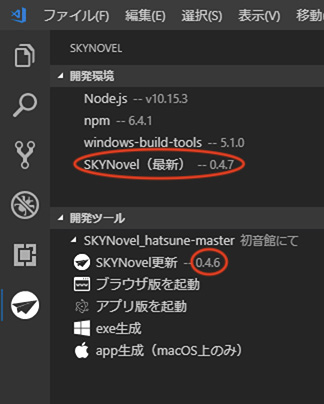
とはいっても、右にあるボタンを押すだけです。
しばらく待つと、最新バージョンに更新されます。簡単ですね。
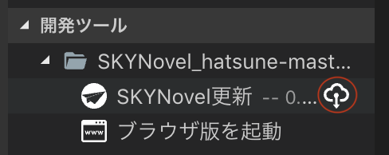
（レイヤなどについて）
（未作成）
BluesNovel でも AIRNovel と概念は変わらないので、AIRNovel の解説文へのリンクでお茶を濁します。いずれ書きなおしたいです……。
→AIRNovel 開発者向け情報
（予定稿・順不同）
レイヤとは
レイヤには裏表がある
使用できる素材ファイル
フォルダの追加削除
ジャンプしてみる
選択肢を作る
スクリプト文法・詳細編
マクロ
サポートする画像・音声ファイルなど
（未作成）
サポートする素材ファイルの種類（拡張子）
・・スクリプト
拡張子 sn のUTF-8・LF改行のテキストファイル（AIRNovel では an でした）
・・画像・動画・アニメ系
png、jpg、jpeg、svg、mp4
※（2020/12/13時点：H265は未サポート。ブラウザ・Electron的に現在H264までしか再生できないらしい）
スプライトシート json と png（または jpeg）
bluesnovel⚠️：スプライトシート（アニメpng）は[lay]の画像レイヤで再生できる。 path.jsonでは「論理名→.json」「論理名.列x行→.png」の2件に分かれて載り、[lay fn=論理名]の 解決結果は.jsonになる。本家はpixiのAnimatedSpriteだが、こちらはDOMなので CSSのstepsアニメで背景位置をコマ送りする（JSは1コマも跨がない）。 meta.animationSpeedは本家（pixi）と同じ「1tick=1/60秒あたりに進むコマ数」として読む。
[graph]（本文中のインライン画像）と [l]／[p]の待ちマーク（breakline／breakpage）でも 同じ仕組みで再生する。
未対応：文字レイヤの枠画像（b_pic）でのシート再生、コマ数が格子に満たないシート、動画（mp4等）。
・・ＢＧＭ・音声系
mp3、m4a、ogg、aac、webm、flac、wav
※ただしブラウザ版はブラウザがサポートするモノのみ。
アプリ版は Electron の Chromiumがサポートするモノのみ（aac以外）です。
・・フォント
woff2、otf、ttf
中級テクニック
変数・定数の可視化機能
デベロッパーツールから変数や定数を確認できる機能です。
ブラウザ版では、デベロッパーツール（ChromeやSafariの機能）を開いて【Application】-【Local Storage】から、システム変数(sys:)などの内容が見えます。
※直接値の変更・クリアができます。jsonで記入して下さい。
※暗号化もします。
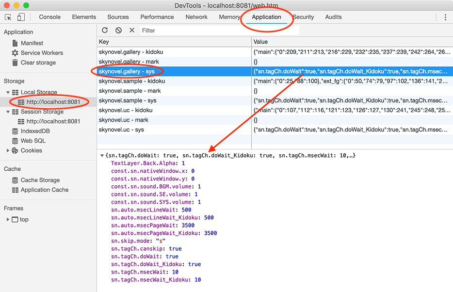
またプロジェクトファイル（prj.json）を右クリック-【SKYNovel GUIで編集する】から【variable】にチェックすると、
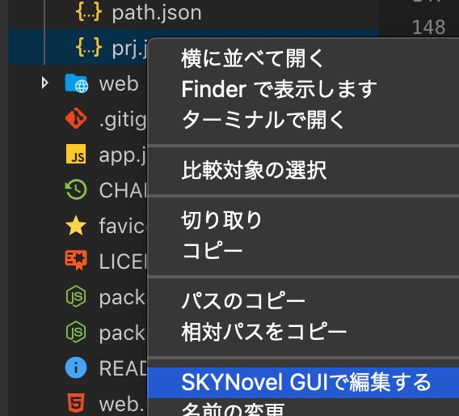
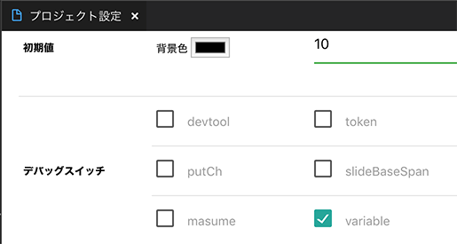
全ての変数が可視化されます。（Session Storageのほうに表示される）※こちらは値の変更をサポートしていません。[s][l]などの停止時に出力するだけです。
※暗号化ON/OFFも予定しています。
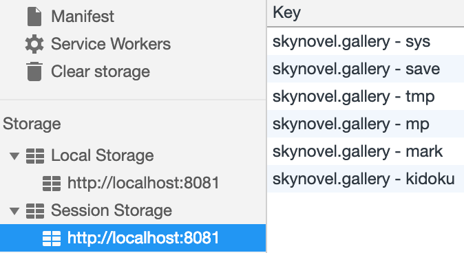
セーブ変数(save:)
セーブデータにセーブされる変数
[record_place]と[save]でセーブデータに保存され、[load]で回復できる変数。
同じ変数でもセーブデータ個別に違う値になる想定で使う。
別のセーブデータを[load]すると、現在のセーブ変数は上書きされる。
※スクリプターが自由に新たに値セット・取得できますが、BluesNovelが値を設定している変数や定数もあります。
const.sn.〜、sn.〜という名前はBluesNovelが使いますので、皆さんは新規に作成しないで下さい。
以下の表にあるモノを使うの（読み・書き）は全然ＯＫです！
（const.sn.〜は必ずしも定数ではなく、一部は実行中にBluesNovelが値を変更する場合があります）
冒頭がconstな変数は、書く（設定）することができません。
constでない変数は、設定するとその値がシステムに反映されます。
例えば「&sn.auto.enabled=true」は自動読みすすみモードを有効にします。
| 変数名 | 初期値 | 値域・型 | コメント |
|---|---|---|---|
| save:const.sn.autowc.enabled | false | true、false | [autowc]（文字ごとのウェイト）enabled属性で指定した値。 |
| save:const.sn.autowc.text | '' | 文字列 | [autowc]（文字ごとのウェイト）同名属性で指定した値。 カンマ区切りで複数文字設定可能。ただしtextとtimeは常に同数にすること。設定は常にリセット＆上書き [autowc enabled=true text="二六八" time="500,1000,1500"] |
| save:const.sn.autowc.time | |||
| save:const.sn.mesLayer | '' | 文字列 | デフォルト文字レイヤ。レイヤ指定を省略した時はこの値が使われる。[current]で変更できる |
| save:const.sn.sound.【buf】.fn | '' | ファイル名 |
サウンドバッファの再生ファイル名 任意のbuf属性を指定した[playse buf=【buf】] 実行で自動で生まれる変数 |
| save:const.sn.sound.【buf】.volume | 1 | 0.0〜1.0 |
サウンドバッファの目標音量 任意のbuf属性を指定した[playse buf=【buf】] 実行で自動で生まれる変数 [volume]での volume属性や、「sys:const.sn.sound.【buf】.volume」は基準音量であり、別物である点に注意 |
| save:const.sn.styPaging | 'color: yellow; text-shadow: 1px 1px 0 #000, -1px 1px 0 #000, 1px -1px 0 #000, -1px -1px 0 #000;' | CSS Style | ページ遷移中 CSS スタイル。bluesnovel：[page] style= で設定する。読み戻り中だけ全文字レイヤへ当てるので、[lay style=…]より後に効く |
| save:sn.doRecLog | false | true、false | テキストを履歴に記録するか bluesnovel：falseの間は履歴に積まない。 本家は記録を止めるのでなく <span class='offrec'>で包んで履歴側で隠す（TxtLayer.ts:494）が、
こちらは履歴の蓄積が表示と別物なので単に積まない。なお[rec_ch]／ [rec_r]はこの値に関わらず記録する |
| save:sn.userFnTail | '' | 文字列（'@'禁止） |
ユーザー種別ごとにファイルを差し替えるためのタグ。空でなければ、パス解決時に
「元ファイル名+'@@'+この値」というファイル（例：chapter1@@premium.sn）があれば
そちらを優先して読み込む（ConfigBase.searchPath()）。
代入すると即座に反映される
|
| save:const.sn.sLog | '[]' | 文字列 |
履歴 JSON テキスト 【2019/12/18】内容が const.sn.log.json と同様に。 →以前は、'\f'区切りの妙なフォーマットだった。 bluesnovel：しおりを保存する直前に1回だけ書く。 本家は本文を1トークン追記するたびに書き直すが、この値を読むのはしおりの保存と復元だけなので |
| save:const.sn.loopPlaying | '{}' | json | ループ中のサウンドバッファ。bluesnovel：[playse]/[playbgm]のloop=true・[stopse]系・[xchgbuf]で書く。[load]がここから読んでBGM等を鳴らし直す（本家playLoopFromSaveObj()） |
| save:const.sn.scriptFn | '' | スクリプト名 | 最後に[record_place]したスクリプト名 |
| save:const.sn.scriptIdx | 0 | 整数 | 最後に[record_place]したスクリプトインデックス（行番号ではなく内部トークン単位） |
| save:const.sn.layer.（文字レイヤ名）.enabled | true | true、false | 文字レイヤのenabled値。[add_lay]でtrue、[enable_event]で書き換わる。読む専用で、代入しても有効・無効は変わらない |
音量関連変数が save: と sys: で似たような名前の変数があるので解説します。
・音量関連変数（値域は全て0.0〜1.0）
・アプリ全体の基準音量：sys:sn.sound.global_volume
・基準音量：sys:const.an.sound.（バッファ名）.volume【設定画面で設定する値】
・目標音量：save:const.an.sound.（バッファ名）.volume【[playse]系で指定する値】
・実際の再生音量＝基準音量 x 目標音量 x アプリ全体の基準音量
（[volume volume=0.2]、[playbgm volume=0.5]だと 0.2 x 0.5 x アプリ全体の基準音量）
・再生中に[volume]volume属性指定時：音量を計算しなおす。
アプリ全体の基準音量 = 1の時、
（[volume volume=1.0][playse volume=0.5]（再生音量 1.0 x 0.5 = 0.5）で再生中、[volume volume=0.7]で再生音量が 0.7 x 0.5 = 0.35 になる）
システム変数(sys:)
bluesnovel：sys:の変数は起動時と[clearsysvar]時に本家と同じ初期値が入り、停止点ごとにlocalStorageへ保存される（本家と同じ「skynovel.《save_ns》 - sys」キー）。
⚠️の付いた変数は読み書きはできるが、実際に参照して使う機能がまだ無い（値を変更しても見た目や挙動には反映されない）。理由は各行のコメント欄に補足する。
（セーブデータに関わらず）共通でセーブされる変数
変数の変更が即時に保存される変数。
セーブデータに関わらず、共通して使用する情報を保存する用途。（例：アルバム解放情報・ゲームの達成率など）
※スクリプターが自由に新たに値セット・取得できますが、BluesNovelが値を設定している変数や定数もあります。
const.sn.〜、sn.〜という名前はBluesNovelが使いますので、皆さんは新規に作成しないで下さい。
以下の表にあるモノを使うの（読み・書き）は全然ＯＫです！
（const.sn.〜は必ずしも定数ではなく、一部は実行中にBluesNovelが値を変更する場合があります）
冒頭がconstな変数は、書く（設定）することができません。
constでない変数は、設定するとその値がシステムに反映されます。
例えば「&sys:TextLayer.Back.Alpha」はテキストウインドウの背景の濃度を変更できます。
| 変数名 | 初期値 | 値域・型 | コメント |
|---|---|---|---|
| sys:const.sn.aPageLog | '[]' | 文字列 |
ページ遷移用情報（JSON文字列）。bluesnovel：[{fn, idx, place}, …]＝位置だけを出す（本家はしおりごと出すが、読む用途が「何ページ分あるか」しかないため）
|
| sys:const.sn.nativeWindow.x | 0 | 実数；横座標 | アプリウインドウの座標。画面左上を(0, 0)とする座標。[window]で変更できる。bluesnovel：ブラウザ版はネイティブウインドウが無いため常にno-op（本家も同様） |
| sys:const.sn.nativeWindow.y | 0 | 実数；縦座標 | |
| sys:const.sn.nativeWindow.w | 設定での横幅 | 実数；横幅 | アプリウインドウの縦横幅。[window]で変更できる |
| sys:const.sn.nativeWindow.h | 設定での縦幅 | 実数；縦幅 | |
| sys:const.sn.save.place | 1 | 1〜 | 次のセーブplaceを示す |
| sys:const.sn.sound.BGM.volume | 1 | 0.0〜1.0 | BGMの基準音量（buf="BGM"の効果音） [volume]で変更できる |
| sys:const.sn.sound.SE.volume | 効果音の基準音量（buf="SE"の効果音） [volume]で変更できる | ||
| sys:const.sn.sound.SYS.volume | システムの基準音量（buf="SYS"の効果音） [volume]で変更できる | ||
| sys:const.sn.sound.【buf】.volume |
任意のbufの基準音量 [volume]で変更できる [playse][fadese]系での volume属性や、「save:const.sn.sound.【buf】.volume」は目標音量であり、別物である点に注意 bluesnovel：bufが動的な変数名のため、[volume]タグを経由しない直接代入（ &sys:const.sn.sound.VOICE.volume=…や設定画面）にも即座に反応する専用の代入トリガを持つ（VarStore.defSetTriggerSoundVol()）
| ||
| sys:sn.auto.msecLineWait | 500 | 0〜；ミリ秒 | 未読テキストの改行待ち時間（ミリ秒） ※ここでの改行とは[l]の事 |
| sys:sn.auto.msecLineWait_Kidoku | 500 | 0〜；ミリ秒 | 既読テキストの改行待ち時間（ミリ秒） ※ここでの改行とは[l]の事 |
| sys:sn.auto.msecPageWait | 3500 | 0〜；ミリ秒 | 未読テキストの改ページ待ち時間（ミリ秒） ※ここでの改ページとは[p]の事 |
| sys:sn.auto.msecPageWait_Kidoku | 3500 | 0〜；ミリ秒 | 既読テキストの改ページ待ち時間（ミリ秒） ※ここでの改ページとは[p]の事 |
| sys:sn.skip.mode | 's' | 文字列 |
スキップモード。 sn.skip.enabled = trueの際、改行待ちや改ページ待ちをスキップするかどうかの動作を指定する。 'l' …… 改行待ち=する、改ページ待ち=する 'p' …… 改行待ち=しない、改ページ待ち=する 's' …… 改行待ち=しない、改ページ待ち=しない （初期値="s"） |
| sys:sn.sound.BGM.vol_mul_talking | 1.0 | 0.0〜1.0 |
ボイス（VOICEバッファの音声）再生中のBGM音量への乗数（本家 SndBuf.ts:143-157）。bluesnovel：[playse buf=VOICE]の開始時にこの乗数を読み、今鳴っているBGMの実効音量へ直接反映する（save:は触れない一時的な上書き）。VOICE停止時（自然終了・[stopse]・[stop_allse]のどれでも）にBGM音量を素の実効音量へ戻す（本家 SndBuf.ts:505-512 StStop相当）。1.0より小さい数字にすると、ボイス再生中のBGM音量を絞ることができる。ボイス再生終了次第、BGMの音量は元に戻る。 1.0にすると、この機能をOFFにできる。（後方互換） |
| sys:sn.sound.global_volume | 1 | 0.0〜1.0 | 全体的な音量を設定する。バッファの実際の音量は「sys:const.sn.sound.【buf】.volume」x「save:const.sn.sound.【buf】.volume」x「全体的な音量」の値となる。bluesnovel：[volume]等の専用タグを経由しない直接代入（&sys:sn.sound.global_volume=…や設定画面）にも即座に反応する（本家の「代入トリガ関数」相当をVarStoreに追加した） |
| sys:sn.sound.movie_volume | 1 | 0.0〜1.0 | ムービー音量を設定する。バッファの実際の音量はこの「ムービー音量」x「全体的な音量」の値となる。bluesnovel：[lay fn=movie]で貼った<video>はWebAudioのGainNodeを通らないDOM要素なので、この値とsys:sn.sound.global_volumeを掛け合わせてステージ配下の<video>全部へ直接反映する（ScriptMng.getMovieVolume()/#applyMovieVolume()）。専用タグを経由しない直接代入にも即座に反応する |
| ⚠️ sys:sn.tagCh.canskip | true | true、false | テキストをクリックなどでスキップ可能か bluesnovel：値は読み書きできるが、クリックでのテキスト送り（Main.tsxのonClick）はこの値を見ずに常に進める。参照して制御する実装がまだ無い |
| sys:sn.tagCh.doWait | true | true、false | 未読テキストにウェイトを掛けるか |
| sys:sn.tagCh.doWait_Kidoku | true | true、false | 既読テキストにウェイトを掛けるか |
| sys:sn.tagCh.msecWait | 10 | 0〜；ミリ秒 | 未読テキスト待ち時間（ミリ秒） bluesnovel：1文字が動き出してから次の文字が動き出すまでの遅れ（Web Animations APIのdelay）。文字1つのアニメ時間そのものは[ch_in_style]の wait。エンジンが既読状態と合わせて決め、ScriptMngが停止点ごとにストアへ写す |
| sys:sn.tagCh.msecWait_Kidoku | 10 | 0〜；ミリ秒 | 既読テキスト待ち時間（ミリ秒） |
| sys:TextLayer.Back.Alpha | 0.5 | 0.0〜1.0；透過度 | バック不透明度。テキストウインドウの背景の濃度。0.0で透明、1.0で不透明。 bluesnovel：全文字レイヤの背景に掛かる（各レイヤの b_alphaとの積）。b_alpha_isfixed=trueのレイヤだけ掛からない |
雑用変数(tmp:)
雑用の変数
保存しない変数です。セーブデータを読み込んでも変化せず、ゲームを終了すると消え去ります。
BluesNovelが「保存する必要は無いけど値を使いたいだろうから変数に」している変数もあります。
※スクリプターが自由に新たに値セット・取得できますが、BluesNovelが値を設定している変数や定数もあります。
const.sn.〜、sn.〜という名前はBluesNovelが使いますので、皆さんは新規に作成しないで下さい。
以下の表にあるモノを使うの（読み・書き）は全然ＯＫです！
（const.sn.〜は必ずしも定数ではなく、一部は実行中にBluesNovelが値を変更する場合があります）
冒頭がconstな変数は、書く（設定）することができません。
constでない変数は、設定するとその値がシステムに反映されます。
例えば「sn.auto.enabled」は自動読みすすみモードかどうかを変更できます。
| 変数名 | 初期値 | 値域・型 | コメント |
|---|---|---|---|
| const.Date.getDateStr | 取得の瞬間の日時 | "2019/02/10 15:47"形式 | 変数参照時の日時を返す |
| const.Date.getTime | 0〜；ミリ秒 | JavaScriptの(new Date).getTime() | |
| const.sn.bookmark.json | '[]' | json | BluesNovel内部によるsave:の管理用 bluesnovel：[save]の属性に placeを足した配列。ロード画面（テンプレの frames/_archive.sn）がこれを読んで枠を並べる |
| const.sn.config.（略） |
prj.jsonの内容を返す。 例えば「const.sn.config.window.width」だと画面の横幅を返す。 | ||
| const.sn.displayState | false | true、false | ウインドウ・フルスクリーン状態。trueならフルスクリーン |
| const.sn.frm.（フレーム名） | true | true、false | [add_frame]でロードされた id属性が存在するか |
| const.sn.frm.（フレーム名）.alpha | 1 | 0.0〜1.0；透過度 | フレームの不透明度 |
| const.sn.frm.（フレーム名）.x | 0 | 実数；横座標 | フレームの座標。画面左上を(0, 0)とする座標。leftやtopでないことに注意 |
| const.sn.frm.（フレーム名）.y | 0 | 実数；縦座標 | |
| const.sn.frm.（フレーム名）.scale_x | 1 | true、false | cssでのtransform: scaleの値 |
| const.sn.frm.（フレーム名）.scale_y | 1 | true、false | cssでのtransform: scaleの値 |
| const.sn.frm.（フレーム名）.rotate | 0 | true、false | cssでのrotate、回転角度（単位：deg 度）、正の値は時計回り |
| const.sn.frm.（フレーム名）.width | prjのアプリ横幅画面サイズ | 1〜 | フレームの横幅 |
| const.sn.frm.（フレーム名）.height | prjのアプリ縦幅画面サイズ | 1〜 | フレームの縦幅 |
| const.sn.frm.（フレーム名）.visible | true | true、false | フレームが表示されているか。visible属性の値を返す |
| const.sn.isApp | false | true、false | アプリ版か |
| const.sn.isDbg | false | true、false | デバッグモードか |
| const.sn.isPackaged | true、false | パッケージされたアプリか(Electron API - app.isPackaged) | |
| const.sn.isPaging | true、false | ページ遷移状態か（読み戻り中か） | |
| const.sn.isDarkMode | 環境による | true、false | ダークモードか |
| const.sn.isDebugger | true | true、false | ブラウザ実行、それもVSCode・npmによる「起動：ブラウザ版」上での実行か |
| const.sn.isFirstBoot | true | true、false | ゲームがインストールされてから、初めての起動か（起動されるまでデータが空だったか） bluesnovel：本家同様「sys:の保存データが空だったか」で決まる。テンプレの theme/setting.sn は この変数の[if]の中で sys:TextLayer.Back.Alpha などの初期値を設定している |
| const.sn.isKidoku | true | true、false | この変数を参照した位置は既読か。参照「後」必ず既読になる点に注意 |
| const.sn.key.alternate | false | true、false | ALTキー（MacならOptionキー）が押されているか |
| ⚠️ const.sn.key.back | false | true、false | back 〃 bluesnovel：AndroidのBackキー（本家 EventMng の GoBack）で、ブラウザに相当するキーイベントが無いため常にfalse。変数自体は本家に揃えて用意してある |
| const.sn.key.command | false | true、false | command 〃 |
| const.sn.key.control | false | true、false | control 〃 |
| const.sn.key.end | false | true、false | end 〃 |
| const.sn.key.escape | false | true、false | escape 〃 |
| const.sn.last_page_plain_text | '' | 文字列 | そのページの履歴テキスト（《》文法とルビを含まない） bluesnovel：既定文字レイヤ（[current]）の蓄積文字列からルビ記法を除いた平文（本家 RubySpliter を移植して割っている） |
| const.sn.last_page_text | '' | 文字列 | そのページの履歴テキスト（《》文法もそのまま） bluesnovel：既定文字レイヤの蓄積文字列そのもの |
| const.sn.lay.（レイヤ名） | true | true、false | レイヤが[add_lay]され存在するか |
| const.sn.lay.（レイヤ名）.（foreかback）.alpha | 0.0〜1.0 | 0.0〜1.0；透過度 | レイヤの不透明度 |
| const.sn.lay.（レイヤ名）.（foreかback）.width | 1 | 1〜 | [lay width=]明示時はその値。未指定時：画像レイヤは読み込んだ画像/動画の自然サイズ（読込前は0）、文字レイヤは[lay style="width:…px;"]の明示値、それも無ければステージ幅そのもの（近似） |
| const.sn.lay.（レイヤ名）.（foreかback）.height | 1 | 1〜 | [lay height=]明示時はその値。未指定時：画像レイヤは読み込んだ画像/動画の自然サイズ（読込前は0）、文字レイヤは[lay style="height:…px;"]の明示値、それも無ければステージ高さ（近似） |
| const.sn.lay.（レイヤ名）.（foreかback）.visible | true | true、false | レイヤが表示されているか。visible属性の値を返す |
| const.sn.lay.（レイヤ名）.（foreかback）.x | 0 | 実数；横座標 | レイヤの座標。画面左上を(0, 0)とする座標。leftやtopでないことに注意 |
| const.sn.lay.（レイヤ名）.（foreかback）.y | 0 | 実数；縦座標 | |
| const.sn.Math.PI | 3.141592653589793 | 実数 | 円周率 |
| const.sn.navigator.language | （ユーザーの言語） | 文字列 |
ユーザーが最優先に設定している言語設定（IETF言語タグ - Wikipedia）を返す。 BCP47 で定義された言語バージョン、"jp"、"en"、"en-US"、"fr"、"fr-FR"、"es-ES" など（→Navigator.language - Web API | MDN） ※AIRNovelにおける「const.flash.system.Capabilities.language」にあたる |
| const.sn.needClick2Play | 環境による | true、false | ブラウザ実行で、クリックされるまで音声再生が差し止められている状態か。なにかクリックされれば falseになる |
| const.sn.platform | 環境による | 文字列（本家はjson） |
プラットフォーム情報。詳細はPlatform.js を参照のこと。 例えば const.sn.platform.os.family だと、「OS X」「Android」などを返す bluesnovel：UA文字列そのもの（ .os.familyのような下位参照はできない）。
Platform.jsは入れない方針——bestiejs/platform.js は Public archive で更新が止まっており、
本当に要るのは CmnLib の isSafari／isFirefox／isMac／isMobile の4つだけで、
それはUA文字列から出せるため（判別は test/CmnLib.test.ts が代表的なUAで押さえている）
|
| const.sn.sLog【2019/07/28変名】 const.sn.log.json | "[{'txt':''}]" | json | _log.snが_log.htmに渡す用、１ページずつ{}に分割してjson化して返す bluesnovel： [{"text":"…HTML…"}, …]で、末尾が書きかけの現ページ（本家と同じ）。本家は表示済みHTMLから正規表現でアニメ用のstyleやdata-*属性を削り落として作るが、 こちらはシナリオが書いた生の本文からHTMLを組み立てる（エンジンはDOMを持たないため）。 帰結として、[link]のリンクは落ち、 [graph]のインライン画像は本文と同じ全角空白1つになる。 1ページの区切りは[p]・ [er]・ [clear_text]・ [clear_lay]（表ページ）・ [current]の切替。 上限ページ数はprj.jsonの log.max_len（既定64）
|
| const.sn.screenResolutionX | 起動時ディスプレイの表示領域横幅 | 1〜 |
画面の最大水平解像度。アプリ版でのみ有効な値が設定される。 アプリウインドウ移動で表示されるディスプレイが変わった際にも、そのディスプレイの解像度が反映される |
| const.sn.screenResolutionY | 起動時ディスプレイの表示領域縦幅 | 1〜 | 画面の最大垂直解像度。その他水平と同様。 |
| const.sn.sound.codecs | 環境による | json |
ゲーム実行環境がどのコーデックをサポートしているか。 mp3、m4a、ogg、aac、webm、flac、wavなど bluesnovel： <audio>.canPlayType()で判定（本家はHowler.codecs()）
|
| const.sn.sound.【buf】.playing | 再生状態による | true、false |
サウンドバッファが再生中か 任意のbuf属性を指定した[playse buf=【buf】] 実行で自動で生まれる変数 bluesnovel：自然終了（非同期）でも明示停止でも確実にfalseへ倒る |
| const.sn.aIfStk.length | 1 | 1〜 | IFスタックの深さ（[if]するたびに増） |
| const.sn.vctCallStk.length | 0 | 0〜 | コールスタックの深さ（[call]するたびに増） |
| sn.auto.enabled | false | true、false | 自動読みすすみモードかどうか |
| sn.button.fontFamily | "'Hiragino Sans', 'Hiragino Kaku Gothic ProN', '游ゴシック Medium', meiryo, sans-serif" | 文字列 | 文字ボタンフォントを指定 bluesnovel：値はCSSの font-familyとしてそのまま当たる（全ボタン共通）。停止点ごとにストアへ写す |
| sn.event.domdata.（任意） | '' | 場合による | [event]でフレーム内のHTML要素に登録したイベントで、そのイベント発生時、HTML要素のdata-（任意）属性で指定された値。使い道は開発者が自由に決めていい |
| sn.eventArg | '' | 場合による | [button]等のイベント発生時、そのボタンタグのarg属性で指定された値。使い道は開発者が自由に決めていい |
| sn.eventLabel | '' | 場合による | [button]等のイベント発生時、そのボタンタグのlabel属性で指定された値。使い道は開発者が自由に決めていい |
| sn.skip.all | false | true、false | false（初期値）なら既読のみをスキップ |
| sn.skip.enabled | false | true、false | 次の選択肢(/未読)まで進む が有効か |
| sn.tagL.enabled | true | true、false | 頁末まで一気に読み進むか(l無視) bluesnovel：falseの間は[l]で止まらず頁末（[p]/[s]）まで進む。手動操作・[s]到達（オート・スキップの解除）でtrueへ戻るのも本家どおり |
式の評価と条件分岐
[if]タグやcond属性について
変数の中身を値や他の変数と比較し、その結果によって処理をしたり、しなかったりする事が出来ます。
これは非常に重要なテクニックで、変数の使い道の半分はこのためにあります。
例えば変数「tmp:好感度」が75の時、
変数の値を考えると「75 >= 50」です。「>=」に注目すると「75は50より大なり・大きいか、同じ」なので、式は成立します。
・a >= b は「aとbは同じ値・または aがbより大きい なら真」→日本語でいう「aはb以上」
・a > b は「aよりbが小さい なら真」（aとbは同じ値 は負）→日本語でいう「aはbより大きい」
・a <= b は「aとbは同じ値・または aよりbが大きい なら真」→日本語でいう「aはb以下」
・a < b は「aよりbが大きい なら真」（aとbは同じ値 は負）→日本語でいう「aはb未満」
・a == b は「aとbは同じ値」
・a != b は「aとbは違う値」（違っていれば、大きくても小さくても構わない）
cond属性はあらゆるタグやマクロに必ずある属性で、「式の評価が真の場合のみ、そのタグ（マクロ）を実行する」という働きがあります。
よって[title]によりアプリウインドウのタイトル文字列が設定されます。
別の場合、例えば「tmp:好感度」が49の時には[title]は処理されません。式が成立しないからです。
このように「式を評価」し、処理を変える事をプログラム言語的に「条件分岐」と言います。
よりダイナミックに処理の流れを変える、条件分岐方法があります。
[jump]、[call]に対しcond属性で式の評価を行なうのです。
条件が成立したときだけ[jump]、[call]するわけです。
さらに高級言語によくある、if文もあります。
[if]、[elsif]、[else]、[endif]をサポートしています。
例えば以下のように記述すると、
い
[elsif exp=true]
ろ
[else]
は
[endif]
それぞれのタグの並びはこの通りで無ければなりませんが、[elsif]は必要ならいくつあってもいいし、なくてもいいし、[else]も不要ならなくてもいいです。
[if]と[elsif]などの区間を、「ifブロック」と呼びます。
ifブロックではラベルの記述「*xxxx」以外なら全ての記述が出来ます。
タグやマクロ、[jump]、[call]によるジャンプやコールも可能です。
式で使える演算子と関数
四則演算以外にも、他の高級言語のような演算子や関数が使えます。
式で使える演算子は以下の通りです。
【参考】演算子の優先順位 - JavaScript | MDN
- 【( … )】グループ化（いわゆる括弧）
- 【! …】論理 NOT (!)
- 【- …】単項 -
- 【… ** …】べき乗 (**)
- 【… * …】乗算 (*)
- 【… / …】除算 (/)
- 【… % …】剰余 (%)
- 【… + …】加算 (+)
- 【… - …】減算(-)
- 【… << …】左ビットシフト (<<)
- 【… >> …】右ビットシフト
- 【… >>> …】符号なし右ビットシフト (>>>)
- 【… < …】小なり (<)
- 【… <= …】小なりイコール (<=)
- 【… > …】大なり (>)
- 【… >= …】大なりイコール (>=)
- 【… == …】等価 (==)
- 【… != …】不等価 (!=)
- 【… === …】厳密等価 (===)
- 【… !== …】厳密不等価 (!==)
- 【… & …】ビット単位 AND (&)
- 【… ^ …】ビット単位 XOR (^)
- 【… | …】ビット単位 OR (|)
- 【… && …】論理 AND (&&)
- 【… || …】論理 OR (||)
- 【… ? … : …】条件（三項）演算子
- 【int()】実数を整数に
- 【parseInt()】文字列を整数に変換
- 【Number()】文字列を実数に変換
- 【Boolean()】論理値でない値から論理値へ変換
- 【ceil()】与えた数以上の最小の整数
- 【floor()】与えられた数値以下の最大の整数
- 【round()】与えた数を四捨五入
- 【isNaN()】引数が NaN (非数) かどうか
AIRNovelからの変更点
AIRNovelからの変更点をざっくり説明します。
- 組み込み変数名が変わりました。
旧）save:const.an.scriptFn
新）save:const.sn.scriptFn - 定数が変数になったモノも。
例）const.an.eventArg → sn.eventArg
ルビ記法
タグの他に、《》（二重山括弧）を使用した“ルビ記法”が使用できます。
ここではルビを打たれる本文を「親文字」と表記します。
→参考（機能ギャラリー・ルビ記法）
-
｜（全角縦線、似て非なる文字があるのでこのマニュアルからコピペ推奨）はルビ開始を示す記号で、《》（二重山括弧）はルビを指定します。
は
と同様です。
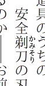
- ｜（全角縦線）は漢字と平仮名・句読点などの境界なら省略できます。
- ルビを半角空白で区切ると、その文字群単位で親文字にルビを振ります。
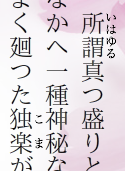
「こ」と「ま」の間に半角空白が入っているので、独に「こ」、楽に「ま」がルビとして振られます。
- ルビのルビ揃えは、[lay][span]のr_align属性で文字レイヤに設定しますが、ルビごとに指定することも出来ます。
記法は《》（二重山括弧）の中に「r_align属性 ＋ ｜（全角縦線）＋ルビ文字」です。
文字レイヤのr_align属性がenter（中付き）だとして……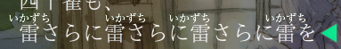
left（肩付き）で「先頭親文字から揃え」られ、
right（右／下揃え）で「末尾親文字から揃え」られています。
省略時は文字レイヤへの[lay][span]のr_align属性に従います。
- 《*》（半角アスタリスクを一文字）で傍点を打ちます。
親文字全てに一つずつ自動で打ちます。
ルビ揃えは自動で「center」になります。
- 《*★》とすると傍点を変更でき、「★」で傍点を打ちます。
傍点は文法が破綻しないもの（「》｜」以外）なら自由です。
- ルビ記法《》内は URLエスケープされます。これにより文法上直接記述できない文字（｜や《》や一文字マクロ）も表示できるようになります。
｜（縦棒）を使用する場合、「%ef%bd%9c」と記述します。
《》（二重山括弧）を使用する場合、「%e3%80%8a」「%e3%80%8b」と記述します。
「%」を使用する場合、「%25」と記述します。
- ルビ揃えや URLエスケープを組み合わせることができます。
フォントの導入
フォントの導入・指定方法について解説していきます。
bluesnovel：プロジェクト内のフォントファイル（woff2／woff／otf／ttf）は、 path.jsonにあるもの全部が起動時に@font-faceとして登録される（本家と同じ。 拡張子を除いたファイル名がそのままfont-family名）。
シナリオ側は[lay style='font-family: ipamjm;']のように書くだけで使える。 WebフォントのCSSを読む場合は[loadplugin]。
※本家がフォント読込に使う[loadplugin]のURL指定・プロジェクト同梱ぶんの両方に対応済み。 VSCode拡張機能によるサブセット化はビルド時の話なのでbluesnovel側の対応は不要。
【重要】2022-03-09リリースの「VSCode拡張機能 v3.20.1」からは【2.使用する字形だけ入ったフォントファイルを作成】などが自動化されています
電子演劇部 【更新】VSCode拡張機能 v3.20.1：フォントサイズ最適化機能追加
1.フォントを準備
※以下をサンプルとして話を進めます。字形が多いのでだいたい入ってるだろうし。
・「IPAmj明朝フォント」戸籍統一文字などに含まれる6万字の漢字を収録したフォント - 窓の杜
・【参考資料】日本語フリーフォントをwebフォント化する4ステップ / hirok-k.com
2.使用する字形だけ入ったフォントファイルを作成
・サブセットフォントメーカー（Win / Mac版あり）
【フォントに格納する文字】へ本文をコピペして、ツールに貼って変換します。
※【書体名を変更する】は使わない
※ただ縦書きフォントでは「──」【……】を渡すと横書き文字が入って上手くいかないので、削除しておく。
全ての文字が入ったフォントファイルは大きすぎる。ロード時間も掛かる。
上記手順で、「初音館にて」ではサイズが1/100ほどになった。
・ipamjm.woff2
23.1MB（全部入り）
344 KB（初音館で使用しているモノのみ）
343540 /23065440 = 0.014894145
3.（可能なら圧縮率の高い）woff2に変換
・WebフォントWOFF、WOFF2形式に変換できるフリーソフト
・WOFFコンバータ（Win / Mac版あり）
BluesNovelがサポートするフォント拡張子は「woff2, otf, ttf」です。※ブラウザによる
4.生成ファイルをプロジェクトフォルダにコピー
※どこでもいいが、サンプルでは script フォルダに。
5.設定画面（またはsetting.sn）の「def_fonts」でフォント名を指定すると、本文に反映される
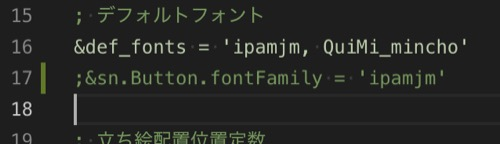
sn.button.fontFamily で文字ボタンのフォントを指定できます。6.部分的・一時的に変更したい場合は、
[span style='font-family: QuiMi_mincho;']フォント[span] などと使う。
戻すときも同様。
7.フォント利用サンプル
フォント利用サンプルがあります。
ローカルフォントファイルと、Webフォントを両方使用しています。
電子演劇部 SKYNovel機能ギャラリー：フォント利用サンプル追加
立ち絵素材生成機能
PSDから立ち絵素材を生成する機能について。
1.立ち絵 psd ファイルを作成します。
「目」「口」などごとに、切り替え可能なレイヤをフォルダにまとめて下さい。
図の例では、「のっぺらぼうの身体」「目」「口」を重ねて人物の立ち絵、としています。シンプルな例です。
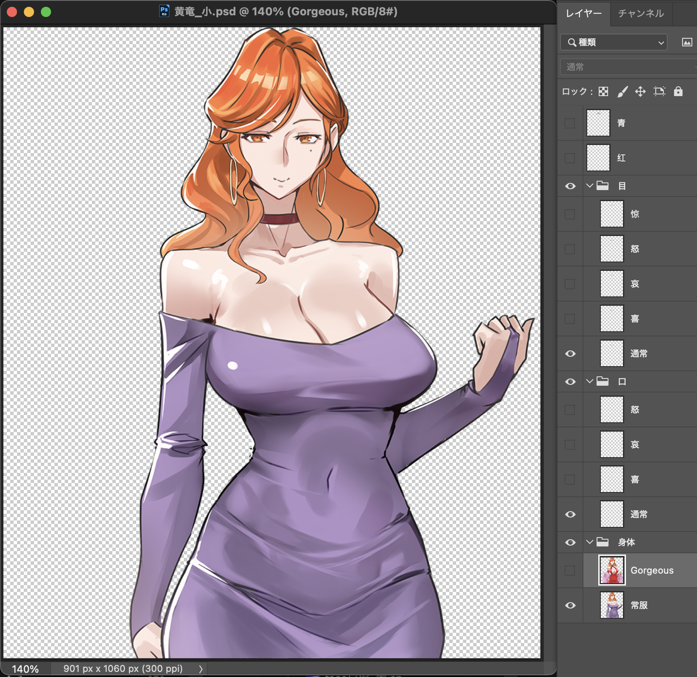
※レイヤ名やフォルダ名は短いとあとあと都合が良いです。というのも「_」で繋がれて一つの長いファイル名となるので。※フォルダ名やレイヤ名は「ガギグゲゴ」のような濁点(゛)・半濁点(゜)など合成文字を避けて下さい。これは後にファイル名になりトラブル（NFC/NFD問題）の元だからです。例の画像でレイヤ名が「ゴージャス」ではなく「Gorgeous」となっているのはそのためです。
「目」「口」など表情の上に乗りあげるメガネなどはメガネだけで一つのレイヤに。「青ざめる」「赤面」などは独立したレイヤにするのをオススメします。
他にも「前髪」「帽子」など、キャラクターによってレイヤが増えると思います。
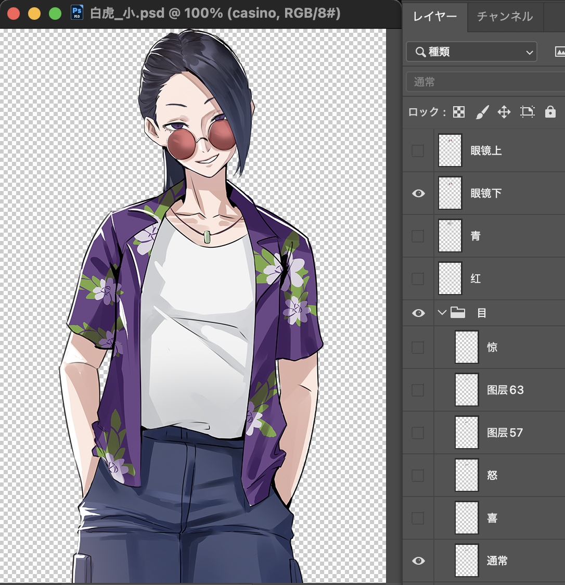
「目」ならなんでもかんでも一つのフォルダに入れないといけない、という事はありません。メガネ＋目の「メガネ目」という画像群入りのフォルダが、裸眼の「目」という画像群入りのフォルダと別に存在していても構いません。※Photoshop ブレンドモード名は限定されており、【normal】【add】【multiply】【screen】のみサポートしてます。
2.ESM テンプレートにおける src/resource 下に psd ファイルをドロップすると、自動で変換処理が走ります。
cjs テンプレートでは core/resource 下になります。
doc/prj/face/下に【レイヤごとの png 画像ファイル】と【faceスクリプト】が生成されます。
3.レイヤごとの png 画像ファイル
psdファイル名・フォルダ名・レイヤ名が「_」で繋がれて一つの長いファイル名となっています。
4.faceスクリプト（face_**.sn）
レイヤごとの画像ファイルを[add_face]するスクリプトです。
※一番下になるレイヤかフォルダは「あえて」コメントアウトされています。画像レイヤとしてのベースであり、[add_face]が不要であるからです。
5.生成画像は faceスクリプトから差分定義され、faceスクリプト自体はテンプレの sub.sn ですべて [call] されます。
※[call] するタイミングはタイトル画面からゲーム開始ボタンを押してから本文が表示される過程です。タイトル画面までは不要であり、ゲーム起動速度をかせぐためです。
6.立ち絵を使用します。
立ち絵表示マクロの [fg] や [fg2] での fn,face 属性にて【レイヤごとの画像ファイル名】を列挙すると、立ち絵として表示されます。
※イメージ的には左が一番下、右に向かって上に重ねていくイメージです。
※画像の例では fn属性もface属性も使用していますが、fn属性のみでカンマ区切りでつなげても構いません。
素材や・変数データを暗号化
暗号化機能について解説していきます。
1.暗号化する
※VSCode用拡張機能 SKYNovel の【開発ツール】の【暗号化】がその機能です。
「暗号化」の「しない」を「する」に変更すると、暗号化します。
2.「snスクリプト」「path.json」「prj.json」などの様子
※暗号化ファイルは、「prj下」から「crypt_prj下」に変換・出力されます。
3.セーブデータ、ブラウザ版はこの通り。「sys_」とかです。
4.セーブデータ、アプリ版はこの通り。
暗号化データは「data_.json」です。
暗号化アプリリリース時は「data.json」は作らず、暗号化データのみで動作します。
セーブデータの保存場所
A)ブラウザ版
OSに関わらず、ブラウザのローカルストレージに保存されます。
Chrome なら [Application]タブ - [Storage] - [Local Storage]下で、[プロジェクト名]と同じ[Key]の三つ（kidoku・mark・sys）です。
B)アプリ版（通常実行）
1.Macの場合は下記のPathにファイルが保存されます。
/Users/<ユーザー名>/Library/Application Support/<アプリ名>/storage/data.json
2.Windowsの場合は下記のPathにファイルが保存されます
C:\Users\<ユーザー名>\AppData\Roaming\<アプリ名>\storage\data.json
3.Linuxの場合は下記のPathにファイルが保存されます
~/.config/<アプリ名>/storage/data.json
C)アプリ版（デバッグ実行）
OSに関わらず、下記のPathにファイルが保存されます。
【プロジェクトフォルダ】/.vscode/storage/
ブラウザ版の公開方法
1.必要なもの、以下の三つのみです。
・web.htm（web/web.jsへのパスが記述されている。必要なら変更）
・web/web.js
・prjフォルダ丸ごと（web.htmと同じフォルダに入れる）
※暗号化した場合は crypt_prjフォルダです。
2.上記のファイルを、FTPなどで公開します。
必ず実行してテストしましょう。